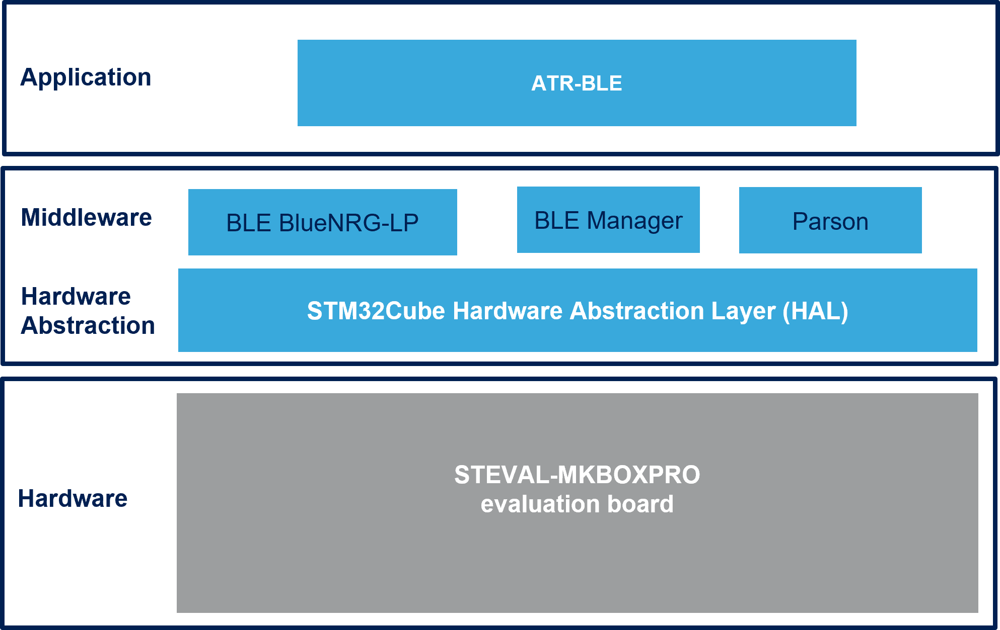

Release Notes for FP-ATR-BLE1 Software for STM32
Copyright © 2023 STMicroelectronics
Purpose
The FP-ATR-BLE1 is STM32Cube function pack function pack for asset tracking using BLE&NFC connectivity for SensorTile.box PRO discovery box The purpose of this functional pack is to provide simple asset tracking application for STEVAL-MKBOXPRO Pro that could be controlled by Bluetooth and NFC connectivity.
The expansion is built on STM32Cube software technology to ease portability across different STM32 microcontrollers.
FP-ATR-BLE1 software features:
- Complete example application to develop node with BLE&NFC connectivity, environmental and motion sensors, and perform real-time Tracking sensor monitor
- Firmware compatible with ST Asset Tracking applications for Android/iOS controlling and reading the tracking log
- Firmware compatible with ST BLE Sensor applications for Android/iOS for firmware update over the Air (FoTA)
- Easy portability across different MCU families, thanks to STM32Cube
- Free, user-friendly license terms
This firmware package includes Components Device Drivers, Board Support Package and example application for the STMicroelectronics:
STEVAL-MKBOXPRO (SensorTile.box-Pro) evaluation board that contains the following components:
MEMS sensor devices: STTS22H, LPS22DF, LSM6DSV16X, LIS2DU12, LIS2MDL
Dynamic NFC tag: ST25DV04K
Digital Microphone: MP23db01HP
BlueNRG-LP Bluetooth Low Energy System On Chip
The figure below shows the overall architecture: 
Here is the list of references to user documents:
- FP-ATR-BLE1 : Data Brief, User Manual and Quick Start Guide
- STM32Cube : STM32Cube
- STM32 Nucleo boards : STM32 Nucleo boards
Update History
Main Changes
Product Update release
- Added support to AutoDiscovery of NFC component
- Bug Fix
Contents
The components flagged by “” have changed since the previous release. “” are new.
| Name | Version | Document |
|---|---|---|
| FP-ATR-BLE1_STM32U585AI-SensorTile.boxPro Doxygen documentation | 2.1.0 | CHM |
| Name | Version | Document |
|---|---|---|
| STM32U585AI-SensorTile.boxPro/Applications/ATR_BLE | 2.1.0 | Read Me |
| Name | Version | Document |
|---|---|---|
| BlueNRG-LP | 1.3.0 | Release Note |
| BLE_Manager Lib | 1.9.1 | Release Note |
| PnPLCompManager Lib | 2.0.0 | Release Note |
| parson | 1.5.2 | Release Note |
| Name | Version | Document |
|---|---|---|
| STM32U5xx CMSIS | 1.3.0 | release notes |
| STM32U5xx HAL | 1.3.0 | release notes |
| BSP SensorTileBoxPro | 1.1.0 | release notes |
| Name | Version | Document |
|---|---|---|
| lis2mdl | 1.6.0 | release notes |
| stc3115 | 1.1.0 | release notes |
| lis2du12 | 1.2.0 | release notes |
| lps22df | 1.2.0 | release notes |
| lsm6dsv16x | 1.3.0 | release notes |
| stts22h | 1.4.0 | release notes |
| ST25DV | 2.0.2 | release notes |
Known Limitations
None
Development Toolchains and Compilers
- IAR Embedded Workbench for ARM (EWARM) toolchain V9.20.1 + STLink/V3
- RealView Microcontroller Development Kit (MDK-ARM) toolchain V5.37.0 + STLink/V3
- STM32CubeIDE Integrated Development Environment for STM32 V1.13.2 STLink/V3
Supported Devices and Boards
- SensorTileBoxPro discovery box with multi-sensors and wireless connectivity [STEVAL-MKBOXPRO]
Backward Compatibility
None
Dependencies
This software release is compatible with:
- ST Asset Tracking Android application V3.4.0 (or higher)
- ST Asset Tracking iOS application V3.4.0 (or higher)
- ST BLE Sensor Android application V5.0.0 (or higher)
- ST BLE Sensor iOS application V5.0.0 (or higher)
Main Changes
Product Update release
- Added support for SensorTile.box-Pro evaluation board
- Removed support for SensorTile.box evaluation board
- Added the capability to control the Tracking using NFC connectivity
- Added the capability to read the Maximum&Minium samples values
- Added the capability to make Firmware Over the Air Update (FoTA)
Contents
The components flagged by “” have changed since the previous release. “” are new.
| Name | Version | Document |
|---|---|---|
| FP-ATR-BLE1_STM32U585AI-SensorTile.boxPro Doxygen documentation 2.0. | 0 | CHM |
| Name | Version | Document |
|---|---|---|
| STM32U585AI-SensorTile.boxPro/Applications/ATR_BLE | 1.2.0 | Read Me |
| Name | Version | Document |
|---|---|---|
| BlueNRG-LP | 1.2.0 | Release Note |
| BLE_Manager Lib | 1.8.0 | Release Note |
| parson | 1.3.0 | Release Note |
| Name | Version | Document |
|---|---|---|
| STM32U5xx CMSIS | 1.1.0 | release notes |
| STM32U5xx HAL | 1.1.0 | release notes |
| BSP SensorTileBoxPro | 1.0.0 | release notes |
| Name | Version | Document |
|---|---|---|
| lis2mdl | 1.6.0 | release notes |
| stc3115 | 1.1.0 | release notes |
| lis2du12 | 1.1.0 | release notes |
| lps22df | 1.2.0 | release notes |
| lsm6dsv16x | 1.3.0 | release notes |
| stts22h | 1.4.0 | release notes |
| ST25DV | 2.0.2 | release notes |
Known Limitations
None
Development Toolchains and Compilers
- IAR Embedded Workbench for ARM (EWARM) toolchain V9.20.1 + STLink/V3
- RealView Microcontroller Development Kit (MDK-ARM) toolchain V5.37.0 + STLink/V3
- STM32CubeIDE Integrated Development Environment for STM32 V1.12.0 STLink/V3
Supported Devices and Boards
- SensorTileBoxPro discovery box with multi-sensors and wireless connectivity [STEVAL-MKBOXPRO]
Backward Compatibility
None
Dependencies
This software release is compatible with:
- ST Asset Tracking Android application V3.4.0 (or higher)
- ST Asset Tracking iOS application V3.4.0 (or higher)
- ST BLE Sensor Android application V4.19.0 (or higher)
- ST BLE Sensor iOS application V4.19.0 (or higher)
Main Changes
First release
First Release of FP-ATR-BLE1 STM32Cube Function Pack for BLE Asset Tracking on SensorTile.box (STEVAL-MKS1BOX1) Pro Mode
Contents
| Name | Version | License | Document |
|---|---|---|---|
| FP-ATR-BLE1 Doxygen documentation | 1.0.0 | SLA0055 | CHM |
| Name | Version | License | Document |
|---|---|---|---|
| ATR_BLE | 1.0.0 | SLA0055 | Read Me |
| Name | Version | License | Document |
|---|---|---|---|
| FreeRTOS | 10.2.1 | MIT | Read Me |
| FatFS | 0.12c | BSD-3-Clause | Read Me |
| BlueNRG-1/2 | 1.1.0 | SLA0068 | Release Note |
| MetaDataManger | 1.0.0 | SLA0068 | Release Note |
| Name | Version | License | Document |
|---|---|---|---|
| STM32L4xx CMSIS | 1.6.0 | BSD-3-Clause | release notes |
| STM32L4xx HAL | 1.11.0 | BSD-3-Clause | release notes |
| BSP SensorTile.box | 1.3.2 | BSD-3-Clause | release notes |
| Name | Version | License | Document |
|---|---|---|---|
| stts751 | 1.0.1 | MCD-ST Liberty V2 | release notes |
| lsm6dsox | 1.2.1 | MCD-ST Liberty V2 | release notes |
| lps22hh | 1.1.1 | MCD-ST Liberty V2 | release notes |
| lis3dhh | 1.0.0 | MCD-ST Liberty V2 | release notes |
| lis2mdl | 1.2.1 | MCD-ST Liberty V2 | release notes |
| lis2dw12 | 1.1.2 | MCD-ST Liberty V2 | release notes |
| hts221 | 5.2.2 | MCD-ST Liberty V2 | release notes |
Known Limitations
With some Android phones there are some compatibility issues for using the PIN for BLE security connection.
Development Toolchains and Compilers
- IAR Embedded Workbench for ARM (EWARM) toolchain V8.32.3 + STLink/V2
- RealView Microcontroller Development Kit (MDK-ARM) toolchain V5.27.1 + ST-LINK/V2
- STM32CubeIDE Integrated Development Environment for STM32 V1.2.1 + ST-LINK/V2
Supported Devices and Boards
- SensorTile.box wireless multi sensor development Rev3 [STEVAL-MKS1BOX1]
Backward Compatibility
None
Dependencies
This software release is compatible with: